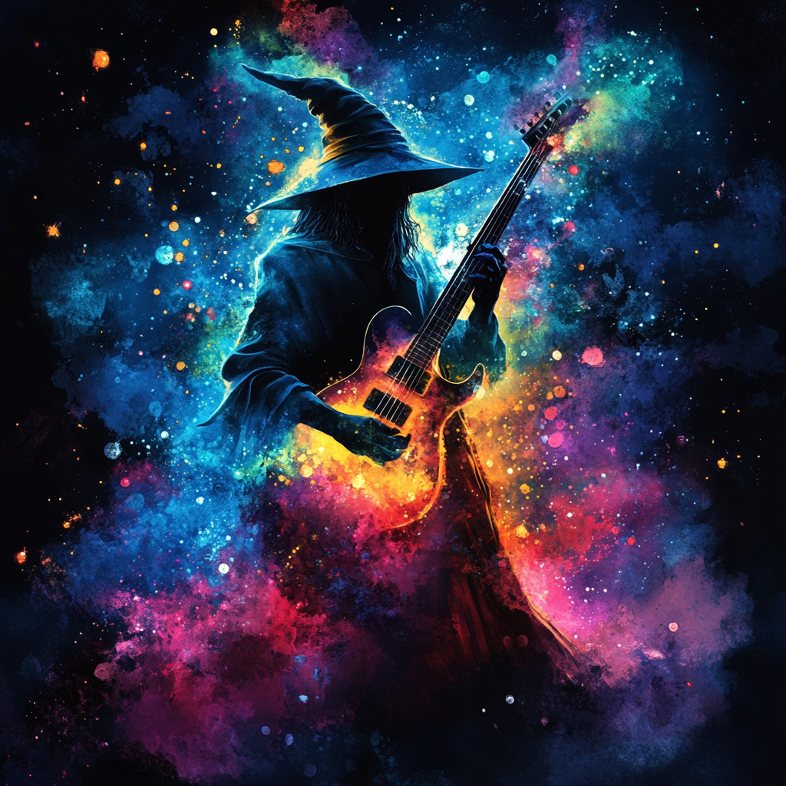

<!DOCTYPE html>
<html lang="en">
<head>
<meta charset="UTF-8">
<meta name="viewport" content="width=device-width, initial-scale=1.0, maximum-scale=1.0, user-scalable=no, viewport-fit=cover">
<meta name="apple-mobile-web-app-capable" content="yes">
<meta name="apple-mobile-web-app-status-bar-style" content="black-translucent">
<meta name="apple-mobile-web-app-title" content="THE Ear Training Game">
<meta name="theme-color" content="#0c0c14">
<title>THE Ear Training Game</title>
<link rel="icon" href="EarTrainingGameThumbnail.png">
<link rel="apple-touch-icon" href="EarTrainingGameThumbnail.png">
<style>
  * { margin: 0; padding: 0; box-sizing: border-box; -webkit-tap-highlight-color: transparent; }
  body {
    background: linear-gradient(160deg, #0c0c14 0%, #1a1a2e 40%, #16213e 100%);
    background-attachment: fixed;
    color: #e0e0e0;
    font-family: 'SF Mono', 'Fira Code', 'JetBrains Mono', 'Menlo', monospace;
    min-height: 100vh;
    min-height: -webkit-fill-available;
    overflow-x: hidden;
    -webkit-font-smoothing: antialiased;
  }
  html { height: -webkit-fill-available; background-color: #0c0c14; }

  .bg-grain {
    position: fixed; top: 0; left: 0; right: 0; bottom: 0;
    opacity: 0.03; pointer-events: none;
    background-image: url("data:image/svg+xml,%3Csvg viewBox='0 0 256 256' xmlns='http://www.w3.org/2000/svg'%3E%3Cfilter id='noise'%3E%3CfeTurbulence type='fractalNoise' baseFrequency='0.9' numOctaves='4' stitchTiles='stitch'/%3E%3C/filter%3E%3Crect width='100%25' height='100%25' filter='url(%23noise)'/%3E%3C/svg%3E");
  }

  .inner { max-width: 520px; margin: 0 auto; padding: 32px 16px 40px; position: relative; z-index: 1; }
  .inner.has-notch { padding-top: calc(env(safe-area-inset-top, 20px) + 12px); padding-bottom: env(safe-area-inset-bottom, 40px); }

  /* Header */
  .header { display: flex; flex-direction: column; gap: 12px; margin-bottom: 20px; }
  .header-controls { display: flex; justify-content: space-between; align-items: center; }
  .logo-area { display: flex; align-items: center; gap: 12px; }
  .logo-icon {
    width: 44px; height: 44px; border-radius: 12px;
    overflow: hidden;
    box-shadow: 0 4px 20px rgba(99,102,241,0.3);
  }
  .logo-icon img { width: 100%; height: 100%; object-fit: cover; }
  .title { font-size: 22px; font-weight: 700; letter-spacing: -0.5px; color: #f0f0f0; }
  .subtitle { font-size: 11px; color: #8888aa; letter-spacing: 2px; text-transform: uppercase; }
  .settings-btn {
    background: rgba(255,255,255,0.06); border: 1px solid rgba(255,255,255,0.1);
    color: #aaa; min-width: 40px; height: 40px; padding: 0 12px; border-radius: 10px; font-size: 18px; cursor: pointer;
    display: flex; align-items: center; justify-content: center; transition: all 0.15s; font-family: inherit;
  }
  .settings-btn.active {
    background: linear-gradient(135deg, #6366f1, #7c3aed); color: #fff;
    border: 1px solid rgba(99,102,241,0.5); box-shadow: 0 2px 12px rgba(99,102,241,0.25);
  }

  /* Settings */
  .settings-panel {
    background: rgba(255,255,255,0.04); border: 1px solid rgba(255,255,255,0.08);
    border-radius: 14px; padding: 18px; margin-bottom: 20px;
    display: flex; flex-direction: column; gap: 16px;
  }

  .setting-group { display: flex; flex-direction: column; gap: 8px; }
  .setting-label { font-size: 11px; color: #8888aa; text-transform: uppercase; letter-spacing: 1.5px; }
  .toggle-row { display: flex; gap: 6px; flex-wrap: wrap; }
  .toggle-btn {
    padding: 7px 14px; border-radius: 8px; border: 1px solid rgba(255,255,255,0.1);
    background: rgba(255,255,255,0.04); color: #aaa; font-size: 12px; cursor: pointer;
    transition: all 0.15s; font-family: inherit;
  }
  .toggle-btn.active {
    background: linear-gradient(135deg, #6366f1, #7c3aed); color: #fff;
    border: 1px solid rgba(99,102,241,0.5); box-shadow: 0 2px 12px rgba(99,102,241,0.25);
  }
  .octave-helper { font-size: 10px; color: #555; margin-top: 2px; }

  /* Stats */
  .stats-row {
    display: flex; justify-content: center; gap: 24px; margin-bottom: 24px; padding: 14px 0;
    border-top: 1px solid rgba(255,255,255,0.06); border-bottom: 1px solid rgba(255,255,255,0.06);
  }
  .stat { display: flex; flex-direction: column; align-items: center; gap: 2px; }
  .stat-num { font-size: 22px; font-weight: 700; color: #e0e0e0; }
  .stat-label { font-size: 10px; color: #666680; text-transform: uppercase; letter-spacing: 1.5px; }

  /* Main */
  .main-area { margin-bottom: 24px; }
  .start-area { text-align: center; padding: 40px 20px; }
  .instructions { font-size: 14px; color: #8888aa; line-height: 1.6; margin-bottom: 28px; }
  .onboard-pitch { text-align: left; margin-bottom: 32px; }
  .onboard-pitch p { font-size: 14px; color: #8888aa; line-height: 1.6; margin: 0 0 16px 0; }
  .onboard-howto { text-align: left; margin-bottom: 28px; }
  .onboard-howto h3 { font-size: 13px; color: #aaa; margin: 0 0 12px 0; font-weight: 600; letter-spacing: 0.5px; }
  .onboard-howto ol { font-size: 14px; color: #8888aa; line-height: 1.6; padding-left: 20px; margin: 0; }
  .onboard-howto li { margin-bottom: 6px; }

  .big-btn {
    padding: 14px 36px; border-radius: 12px; border: none;
    background: linear-gradient(135deg, #6366f1, #7c3aed); color: #fff;
    font-size: 15px; font-weight: 600; cursor: pointer;
    box-shadow: 0 4px 24px rgba(99,102,241,0.3); font-family: inherit;
    letter-spacing: 0.5px; transition: transform 0.1s;
  }
  .big-btn:active { transform: scale(0.97); }

  /* Playback */
  .playback-row { display: flex; gap: 8px; justify-content: center; margin-bottom: 24px; flex-wrap: wrap; }
  .play-btn {
    padding: 9px 16px; border-radius: 10px; border: 1px solid rgba(255,255,255,0.1);
    background: rgba(255,255,255,0.05); color: #ccc; font-size: 12px; cursor: pointer;
    font-family: inherit; transition: all 0.15s;
  }
  .play-btn:active { background: rgba(255,255,255,0.1); }

  /* Guess */
  .guess-area { margin-bottom: 20px; }
  .guess-prompt { text-align: center; font-size: 13px; color: #8888aa; margin-bottom: 16px; }
  .guess-prompt.correct { color: #4ade80; }
  .guess-prompt.wrong { color: #f87171; }

  .note-grid { display: grid; grid-template-columns: repeat(4, 1fr); gap: 8px; padding: 0 4px; }
  .note-btn {
    padding: 14px 6px; border-radius: 10px; border: 1px solid rgba(255,255,255,0.1);
    background: rgba(255,255,255,0.04); color: #ccc; font-size: 13px; cursor: pointer;
    font-family: inherit; display: flex; flex-direction: column; align-items: center;
    gap: 3px; transition: all 0.15s; user-select: none; -webkit-user-select: none;
  }
  .note-btn:active { transform: scale(0.95); }
  .note-btn.selected {
    background: linear-gradient(135deg, rgba(99,102,241,0.3), rgba(124,58,237,0.3));
    border: 1px solid rgba(99,102,241,0.6); color: #fff;
    box-shadow: 0 2px 12px rgba(99,102,241,0.2);
  }
  .note-btn.correct-note {
    background: linear-gradient(135deg, rgba(74,222,128,0.2), rgba(34,197,94,0.2));
    border: 1px solid rgba(74,222,128,0.5); color: #4ade80;
  }
  .note-btn.missed {
    background: linear-gradient(135deg, rgba(251,191,36,0.15), rgba(245,158,11,0.15));
    border: 1px solid rgba(251,191,36,0.4); color: #fbbf24;
  }
  .note-btn.wrong-note {
    background: linear-gradient(135deg, rgba(248,113,113,0.15), rgba(239,68,68,0.15));
    border: 1px solid rgba(248,113,113,0.4); color: #f87171;
  }
  .note-name { font-weight: 600; font-size: 14px; }
  .note-degree { font-size: 10px; opacity: 0.5; }

  /* Actions */
  .action-row { display: flex; justify-content: center; margin-top: 20px; }
  .reveal-btn {
    padding: 14px 48px; border-radius: 12px; border: none;
    background: linear-gradient(135deg, #f59e0b, #d97706); color: #fff;
    font-size: 15px; font-weight: 600; cursor: pointer;
    box-shadow: 0 4px 24px rgba(245,158,11,0.25); font-family: inherit;
    transition: all 0.15s;
  }
  .reveal-btn:active { transform: scale(0.97); }
  .reveal-btn:disabled { opacity: 0.4; cursor: default; }

  .answer-box {
    text-align: center; margin-top: 18px; padding: 12px 18px;
    background: rgba(255,255,255,0.04); border-radius: 10px;
    border: 1px solid rgba(255,255,255,0.08); font-size: 15px; font-weight: 600;
  }
  .answer-label { color: #8888aa; font-weight: 400; font-size: 12px; }
  .answer-degree { color: #6366f1; font-size: 13px; }
  .answer-rt { color: #6366f1; font-size: 13px; margin-left: 8px; opacity: 0.8; }

  /* History */
  .history-section { margin-top: 8px; }
  .history-title { font-size: 11px; color: #666680; text-transform: uppercase; letter-spacing: 1.5px; margin-bottom: 10px; }
  .history-list { display: flex; flex-direction: column; gap: 4px; }
  .history-item {
    display: flex; justify-content: space-between; align-items: center;
    padding: 8px 12px; background: rgba(255,255,255,0.02); border-radius: 8px;
    border-left: 3px solid; font-size: 13px;
  }
  .history-answer { color: #aaa; }
  .history-correct { color: #4ade80; font-weight: 700; }
  .history-wrong { color: #f87171; font-weight: 700; }

  /* Pitch stats */
  .pitch-stats-panel {
    background: rgba(255,255,255,0.04); border: 1px solid rgba(255,255,255,0.08);
    border-radius: 14px; padding: 18px; margin-bottom: 20px;
  }
  .pitch-stat-grid {
    display: grid; grid-template-columns: repeat(4, 1fr); gap: 6px; margin-top: 10px;
  }
  .pitch-stat-cell {
    padding: 10px 6px; border-radius: 8px; border: 1px solid rgba(255,255,255,0.06);
    text-align: center; display: flex; flex-direction: column; align-items: center; gap: 2px;
  }
  .pitch-stat-name { font-weight: 600; font-size: 13px; }
  .pitch-stat-acc { font-size: 11px; opacity: 0.8; }

  /* Mode tabs */
  .mode-tabs { display: flex; gap: 4px; }
  .mode-tab {
    padding: 6px 14px; border-radius: 8px; border: 1px solid rgba(255,255,255,0.1);
    background: rgba(255,255,255,0.04); color: #777; font-size: 11px; cursor: pointer;
    font-family: inherit; letter-spacing: 1px; text-transform: uppercase; transition: all 0.15s;
  }
  .mode-tab.active {
    background: linear-gradient(135deg, #6366f1, #7c3aed); color: #fff;
    border-color: rgba(99,102,241,0.5);
  }

  /* Drone mode */
  .drone-controls { text-align: center; margin-bottom: 20px; }
  .drone-label { font-size: 11px; color: #8888aa; text-transform: uppercase; letter-spacing: 1.5px; margin-bottom: 10px; }
  .drone-toggle-row { display: flex; gap: 6px; justify-content: center; margin-bottom: 8px; }
  .drone-hint { font-size: 11px; color: #555; margin-top: 6px; }
  .note-btn.sustained {
    background: linear-gradient(135deg, rgba(99,102,241,0.35), rgba(124,58,237,0.35));
    border: 1px solid rgba(99,102,241,0.7); color: #fff;
    box-shadow: 0 0 16px rgba(99,102,241,0.25);
  }

</style>
</head>
<body>
<div class="bg-grain"></div>
<div class="inner has-notch" id="app"></div>

<script>
// ─── Audio Engine ───
const NOTE_NAMES = ["C","C#","D","D#","E","F","F#","G","G#","A","A#","B"];
const ENHARMONIC = {"C#":"Db","D#":"Eb","F#":"Gb","G#":"Ab","A#":"Bb"};
const DEGREE_LABELS = ["1","♭2","2","♭3","3","4","♯4/♭5","5","♭6","6","♭7","7"];
const SOLFEGE = ["Do","Ra","Re","Me","Mi","Fa","Fi/Se","Sol","Le","La","Te","Ti"];

const CADENCE_PATTERNS = {
  "I-IV-V-I": [[0],[5],[7],[0]],
  "I-IV-I-V-I": [[0],[5],[0],[7],[0]],
  "I-vi-IV-V-I": [[0],[9,true],[5],[7],[0]],
};

const INSTRUMENTS = {
  piano:  { name:"Piano",     attack:0.01, decay:0.3, sustain:0.4, release:0.8, type:"triangle", harmonics:true },
  synth:  { name:"Soft Synth",attack:0.05, decay:0.2, sustain:0.6, release:1.2, type:"sine",     harmonics:false, pad:true },
};

const TEMPO_SETTINGS = {
  slow:   { chordSpacing:1.2, chordDuration:1.0, pauseBeforeGuess:0.9, guessDuration:2.0 },
  medium: { chordSpacing:0.85, chordDuration:0.7, pauseBeforeGuess:0.6, guessDuration:1.6 },
  fast:   { chordSpacing:0.55, chordDuration:0.45, pauseBeforeGuess:0.4, guessDuration:1.2 },
};

function noteToFreq(note, octave) {
  const idx = NOTE_NAMES.indexOf(note);
  const midi = 12 * (octave + 1) + idx;
  return 440 * Math.pow(2, (midi - 69) / 12);
}

let audioCtx = null;
let playbackBus = null;
let playbackOscillators = [];
function ensureCtx() {
  if (!audioCtx || audioCtx.state === "closed") audioCtx = new (window.AudioContext || window.webkitAudioContext)();
  if (audioCtx.state === "suspended" || audioCtx.state === "interrupted") audioCtx.resume();
  return audioCtx;
}

function stopPlayback() {
  const now = audioCtx ? audioCtx.currentTime : 0;
  playbackOscillators.forEach(osc => { try { osc.stop(now); } catch(e) {} });
  playbackOscillators = [];
  if (playbackBus) { playbackBus.disconnect(); playbackBus = null; }
}

function newPlaybackBus() {
  stopPlayback();
  const ctx = ensureCtx();
  playbackBus = ctx.createGain();
  playbackBus.connect(ctx.destination);
  return playbackBus;
}

function playNote(ctx, freq, startTime, duration, instrumentKey, volume, dest) {
  volume = volume || 0.25;
  const ins = INSTRUMENTS[instrumentKey];
  const master = ctx.createGain();
  master.gain.value = 0;
  master.connect(dest || ctx.destination);

  const osc1 = ctx.createOscillator();
  osc1.type = ins.type;
  osc1.frequency.value = freq;
  osc1.connect(master);
  osc1.start(startTime);
  osc1.stop(startTime + duration + ins.release);
  if (dest) playbackOscillators.push(osc1);

  if (ins.harmonics) {
    const osc2 = ctx.createOscillator(); osc2.type = "sine"; osc2.frequency.value = freq * 2;
    const g2 = ctx.createGain(); g2.gain.value = instrumentKey === "piano" ? 0.15 : 0.08;
    osc2.connect(g2); g2.connect(master); osc2.start(startTime); osc2.stop(startTime + duration + ins.release);
    if (dest) playbackOscillators.push(osc2);

    const osc3 = ctx.createOscillator(); osc3.type = "sine"; osc3.frequency.value = freq * 3;
    const g3 = ctx.createGain(); g3.gain.value = instrumentKey === "piano" ? 0.06 : 0.03;
    osc3.connect(g3); g3.connect(master); osc3.start(startTime); osc3.stop(startTime + duration + ins.release);
    if (dest) playbackOscillators.push(osc3);
  }
  if (ins.pad) {
    const osc4 = ctx.createOscillator(); osc4.type = "triangle"; osc4.frequency.value = freq * 0.999;
    const g4 = ctx.createGain(); g4.gain.value = 0.3;
    osc4.connect(g4); g4.connect(master); osc4.start(startTime); osc4.stop(startTime + duration + ins.release);
    if (dest) playbackOscillators.push(osc4);
  }


  const g = master.gain;
  g.setValueAtTime(0, startTime);
  g.linearRampToValueAtTime(volume, startTime + ins.attack);
  g.linearRampToValueAtTime(volume * ins.sustain, startTime + ins.attack + ins.decay);
  g.setValueAtTime(volume * ins.sustain, startTime + duration);
  g.linearRampToValueAtTime(0, startTime + duration + ins.release);
}

function playChord(ctx, rootSemitone, octave, startTime, duration, instrumentKey, volume, dest, minor) {
  const root = rootSemitone % 12;
  const third = minor ? 3 : 4;
  const freqs = [
    noteToFreq(NOTE_NAMES[root], octave),
    noteToFreq(NOTE_NAMES[(root+third)%12], root+third>=12 ? octave+1 : octave),
    noteToFreq(NOTE_NAMES[(root+7)%12], root+7>=12 ? octave+1 : octave),
  ];
  freqs.forEach(f => playNote(ctx, f, startTime, duration, instrumentKey, volume, dest));
}

function getNoteDisplay(idx) {
  const name = NOTE_NAMES[idx];
  const enh = ENHARMONIC[name];
  return enh ? name + "/" + enh : name;
}

// ─── State ───
const state = {
  instrument: "synth",
  cadenceType: "I-IV-V-I",
  polyphony: 1,
  octaveMode: "single",
  tempo: "medium",
  mysteryNotes: null,
  guesses: [],
  revealed: false,
  gameActive: false,
  streak: 0,
  bestStreak: 0,
  totalCorrect: 0,
  totalAttempts: 0,
  showSettings: false,
  showStats: true,
  lastRT: 0,
  history: [],
  mode: "game",
  droneOctave: "low",
  droneActiveNotes: [],
};

// ─── Adaptive Learning (ARTS-inspired) ───
// Combines spaced repetition, interleaving, and confusion pair detection
// Based on Kellman's ARTS algorithm and spaced repetition research
const adaptive = {
  trialNumber: 0,
  roundStartTime: 0,
  pitchStats: Array.from({length: 12}, () => ({
    presentations: 0,
    lastSeenTrial: -100,
    consecutiveCorrect: 0,
    recentResults: [],
    recentRTs: [],
  })),
  confusionMatrix: Array.from({length: 12}, () => Array(12).fill(0)),
  previousRoundPitches: [],
  uncoveredPitches: new Set([0,1,2,3,4,5,6,7,8,9,10,11]),
  combinationDeck: [],
  currentPolyphony: 0,
  intervalStats: Array.from({length: 12}, () => ({
    presentations: 0,
    bothCorrect: 0,
    preserved: 0,
  })),
  trialLog: [],
  rtHistory: {},  // correct RTs per polyphony: { 1: [rt, rt, ...], 2: [...], ... }
};

function semitoneDist(a, b) {
  const d = Math.abs(a - b) % 12;
  return d > 6 ? 12 - d : d;
}


function checkIntervalPreserved(targets, guesses) {
  if (targets.length < 2 || targets.length !== guesses.length) return false;
  function pairwiseIntervals(pitches) {
    const sorted = pitches.slice().sort((a, b) => a - b);
    const ivs = [];
    for (let i = 0; i < sorted.length; i++)
      for (let j = i + 1; j < sorted.length; j++)
        ivs.push((sorted[j] - sorted[i] + 12) % 12);
    return ivs.sort((a, b) => a - b);
  }
  const ti = pairwiseIntervals(targets);
  const gi = pairwiseIntervals(guesses);
  return ti.length === gi.length && ti.every((v, i) => v === gi[i]);
}

function attributeConfusions(missedTargets, wrongGuesses) {
  if (missedTargets.length === 0 || wrongGuesses.length === 0) return [];
  const pairs = [];
  for (const t of missedTargets)
    for (const g of wrongGuesses)
      pairs.push({ target: t, guess: g, dist: semitoneDist(t, g) });
  pairs.sort((a, b) => a.dist - b.dist);
  const usedT = new Set(), usedG = new Set();
  const result = [];
  for (const p of pairs) {
    if (usedT.has(p.target) || usedG.has(p.guess)) continue;
    result.push(p);
    usedT.add(p.target);
    usedG.add(p.guess);
  }
  return result;
}

function buildCombinationDeck(n) {
  const combos = [];
  if (n === 1) {
    for (let i = 0; i < 12; i++) combos.push([i]);
  } else if (n === 2) {
    for (let i = 0; i < 12; i++)
      for (let j = i + 1; j < 12; j++) combos.push([i, j]);
  }
  return combos;
}

function comboKey(pitches) {
  return pitches.slice().sort((a, b) => a - b).join(",");
}

function computePriority(pitchIdx) {
  const stats = adaptive.pitchStats[pitchIdx];
  const trialsSinceSeen = adaptive.trialNumber - stats.lastSeenTrial;
  let priority = 1.0;
  // Error boost: recency-weighted (last 6 trials) instead of cumulative average
  if (stats.recentResults.length >= 2) {
    const recentCorrect = stats.recentResults.reduce((a, b) => a + b, 0);
    const errorRate = 1 - (recentCorrect / stats.recentResults.length);
    priority += errorRate * 4.0;
  }
  // Median RT of recent correct trials (robust replacement for single lastRT)
  const correctRTs = stats.recentRTs.filter((_, i) => stats.recentResults[i] === 1);
  const medianRT = correctRTs.length > 0
    ? correctRTs.slice().sort((a, b) => a - b)[Math.floor(correctRTs.length / 2)]
    : 0;
  // Self-calibrating RT thresholds: derived from player's own correct RT history
  // Falls back to hardcoded motor floor formula for first 15 correct trials (cold start)
  const rtHist = adaptive.rtHistory[adaptive.currentPolyphony];
  let fastThreshold, slowThreshold, fluencyThreshold;
  if (rtHist && rtHist.length >= 15) {
    const sorted = rtHist.slice().sort((a, b) => a - b);
    fastThreshold = sorted[Math.floor(sorted.length * 0.25)];
    slowThreshold = sorted[Math.floor(sorted.length * 0.75)];
    fluencyThreshold = sorted[Math.floor(sorted.length * 0.35)];
  } else {
    const motorFloor = 1400 + (adaptive.currentPolyphony - 1) * 1300;
    fastThreshold = motorFloor + 1000;
    slowThreshold = motorFloor + 4000;
    fluencyThreshold = motorFloor + 2000;
  }
  // Spacing boost: modulated by response time (ARTS core mechanism)
  if (stats.presentations > 0) {
    let spacingCoeff = 0.2;
    if (medianRT > 0 && stats.recentResults.length > 0 && stats.recentResults[stats.recentResults.length - 1] === 1) {
      if (medianRT < fastThreshold) spacingCoeff = 0.1;       // fast correct → longer gap
      else if (medianRT > slowThreshold) spacingCoeff = 0.4;  // slow correct → shorter gap (fragile)
    }
    priority += Math.min(trialsSinceSeen * spacingCoeff, 3.0);
  }
  // Confusion boost
  const row = adaptive.confusionMatrix[pitchIdx];
  const colSum = adaptive.confusionMatrix.reduce((a, r) => a + r[pitchIdx], 0);
  const totalConfusion = row.reduce((a, b) => a + b, 0) + colSum;
  priority += Math.min(totalConfusion * 0.5, 3.0);
  // Neighbor confusion boost: drills fine semitone discrimination
  const neighborIdxs = [(pitchIdx+1)%12, (pitchIdx+11)%12, (pitchIdx+2)%12, (pitchIdx+10)%12];
  let neighborConf = 0, otherConf = 0;
  for (let j = 0; j < 12; j++) {
    if (j === pitchIdx) continue;
    const val = row[j] + adaptive.confusionMatrix[j][pitchIdx];
    if (neighborIdxs.includes(j)) neighborConf += val;
    else otherConf += val;
  }
  if (totalConfusion > 0.5) {
    const neighborRatio = neighborConf / (neighborConf + otherConf + 0.001);
    if (neighborRatio > 0.3) priority += Math.min(neighborConf * 0.4, 2.0);
  }
  // Mastery dampening: requires consecutive correct AND fast responses (fluency)
  const isFluent = stats.consecutiveCorrect >= 3 && medianRT > 0 && medianRT < fluencyThreshold;
  if (isFluent) priority *= 0.5;
  if (adaptive.uncoveredPitches.has(pitchIdx)) priority += 5.0;
  return Math.max(priority, 0.2);
}

function selectPitch(excludePitches) {
  const priorities = Array.from({length: 12}, (_, i) => computePriority(i));
  excludePitches.forEach(p => { priorities[p] = 0; });
  // Enforced minimum delay (ARTS D parameter): pitches seen within last 3 trials
  // cannot reappear — prevents working-memory-based false fluency (Kellman recommends D=3-5)
  // Only applied when enough pitches remain (avoids starvation at high polyphony)
  const minDelay = state.polyphony <= 2 ? 3 : state.polyphony <= 4 ? 2 : 1;
  const delayBlocked = [];
  for (let i = 0; i < 12; i++) {
    const seen = adaptive.pitchStats[i].lastSeenTrial;
    if (priorities[i] > 0 && seen >= 0 && adaptive.trialNumber - seen < minDelay) delayBlocked.push(i);
  }
  const wouldRemain = priorities.filter(p => p > 0).length - delayBlocked.length;
  const stillNeeded = state.polyphony - excludePitches.length;
  if (wouldRemain >= stillNeeded) {
    delayBlocked.forEach(i => { priorities[i] = 0; });
  }
  const available = priorities.filter(p => p > 0).length;
  if (available > state.polyphony + 2) {
    adaptive.previousRoundPitches.forEach(p => {
      if (priorities[p] > 0) priorities[p] *= 0.1;
    });
  }
  if (state.polyphony === 2 && excludePitches.length === 1 && adaptive.combinationDeck.length > 0) {
    const first = excludePitches[0];
    const deckKeys = new Set(adaptive.combinationDeck.map(c => comboKey(c)));
    for (let i = 0; i < 12; i++) {
      if (priorities[i] > 0 && deckKeys.has(comboKey([first, i]))) {
        priorities[i] += 3.0;
      }
    }
  }
  // Interval-difficulty-aware selection: bias toward weak intervals in polyphonic mode
  // Incorporates both accuracy and anchor-slip rate; cap scales with polyphony level
  if (excludePitches.length >= 1 && state.polyphony >= 2) {
    const ivCap = 3.0 + (state.polyphony - 1) * 0.5;
    for (let i = 0; i < 12; i++) {
      if (priorities[i] <= 0) continue;
      let ivBoost = 0;
      for (const first of excludePitches) {
        const sorted = [first, i].sort((a, b) => a - b);
        const iv = (sorted[1] - sorted[0] + 12) % 12;
        const ivStats = adaptive.intervalStats[iv];
        if (ivStats.presentations >= 3) {
          const acc = ivStats.bothCorrect / ivStats.presentations;
          const slipRate = ivStats.preserved / ivStats.presentations;
          ivBoost += Math.max(0, (1 - acc) * 2.5 + slipRate * 2.0);
        }
      }
      priorities[i] += Math.min(ivBoost, ivCap);
    }
  }
  const total = priorities.reduce((a, b) => a + b, 0);
  if (total === 0) {
    const candidates = Array.from({length:12}, (_,i) => i).filter(i => !excludePitches.includes(i));
    return candidates[Math.floor(Math.random() * candidates.length)];
  }
  let r = Math.random() * total;
  let lastNonZero = 0;
  for (let i = 0; i < 12; i++) {
    if (priorities[i] > 0) lastNonZero = i;
    r -= priorities[i];
    if (r < 0) return i;
  }
  return lastNonZero;
}

function updateAdaptiveStats() {
  // Trial log: capture priorities before they're consumed by this trial's stats update
  const prioritySnapshot = Array.from({length: 12}, (_, i) => +computePriority(i).toFixed(2));
  adaptive.trialNumber++;
  const rt = state.lastRT;
  const mysteryPitches = state.mysteryNotes.map(n => n.pitch);
  const guessedPitches = [...new Set(state.guesses)];

  // Per-pitch stats
  mysteryPitches.forEach(pitch => {
    const stats = adaptive.pitchStats[pitch];
    stats.presentations++;
    stats.lastSeenTrial = adaptive.trialNumber;
    const wasCorrect = guessedPitches.includes(pitch);
    stats.recentResults.push(wasCorrect ? 1 : 0);
    if (stats.recentResults.length > 6) stats.recentResults.shift();
    stats.recentRTs.push(rt);
    if (stats.recentRTs.length > 6) stats.recentRTs.shift();
    if (wasCorrect) {
      stats.consecutiveCorrect++;
    } else {
      stats.consecutiveCorrect = 0;
    }
  });

  // Attributed confusion (replaces cross-product)
  const missedTargets = mysteryPitches.filter(p => !guessedPitches.includes(p));
  const wrongGuesses = guessedPitches.filter(g => !mysteryPitches.includes(g));
  const attributed = attributeConfusions(missedTargets, wrongGuesses);
  // Anchor slip: correct intervals but wrong placement — reduce confusion matrix weight
  // because the per-note confusions are misleading (the whole frame shifted, not individual notes)
  const wasAnchorSlip = mysteryPitches.length >= 2
    && guessedPitches.length === mysteryPitches.length
    && checkIntervalPreserved(mysteryPitches, guessedPitches);
  const confusionWeight = wasAnchorSlip ? 0.5 : 1.0;
  attributed.forEach(({ target, guess }) => {
    adaptive.confusionMatrix[target][guess] += confusionWeight;
  });

  // Interval stats (polyphonic mode)
  if (mysteryPitches.length >= 2) {
    const sortedTargets = mysteryPitches.slice().sort((a, b) => a - b);
    for (let i = 0; i < sortedTargets.length; i++) {
      for (let j = i + 1; j < sortedTargets.length; j++) {
        const iv = (sortedTargets[j] - sortedTargets[i] + 12) % 12;
        adaptive.intervalStats[iv].presentations++;
        if (guessedPitches.includes(sortedTargets[i]) && guessedPitches.includes(sortedTargets[j])) {
          adaptive.intervalStats[iv].bothCorrect++;
        }
      }
    }
    // Anchor-slip tracking: reuse wasAnchorSlip from confusion attribution above
    if (wasAnchorSlip && missedTargets.length > 0) {
      const sorted = mysteryPitches.slice().sort((a, b) => a - b);
      for (let i = 0; i < sorted.length; i++)
        for (let j = i + 1; j < sorted.length; j++)
          adaptive.intervalStats[(sorted[j] - sorted[i] + 12) % 12].preserved++;
    }
  }

  // Confusion matrix decay: resolved confusions fade over time (0.95 per trial)
  for (let i = 0; i < 12; i++)
    for (let j = 0; j < 12; j++)
      adaptive.confusionMatrix[i][j] *= 0.95;

  // Interval stats decay: prevents calcification of lifetime averages
  // Same 0.95 rate as confusion matrix (~14-trial half-life)
  // Decaying both numerator and denominator preserves ratios but shrinks
  // effective sample size, so recent performance dominates over time.
  // When presentations decays below 3, the selectPitch threshold gate
  // (ivStats.presentations >= 3) silences stale data automatically.
  for (let i = 0; i < 12; i++) {
    adaptive.intervalStats[i].presentations *= 0.95;
    adaptive.intervalStats[i].bothCorrect *= 0.95;
    adaptive.intervalStats[i].preserved *= 0.95;
  }

  // RT history: store correct-trial RTs per polyphony for self-calibrating thresholds
  const allCorrect = mysteryPitches.every(p => guessedPitches.includes(p))
    && guessedPitches.every(g => mysteryPitches.includes(g));
  if (allCorrect && rt > 0) {
    const polyKey = adaptive.currentPolyphony;
    if (!adaptive.rtHistory[polyKey]) adaptive.rtHistory[polyKey] = [];
    const hist = adaptive.rtHistory[polyKey];
    // Outlier gate: reject RTs > 60s during cold start, or > 2x current P90 once calibrated
    let cap = 60000;
    if (hist.length >= 15) {
      const sorted = hist.slice().sort((a, b) => a - b);
      cap = sorted[Math.floor(sorted.length * 0.9)] * 2;
    }
    if (rt <= cap) {
      hist.push(rt);
      if (hist.length > 50) hist.shift();
    }
  }

  // Trial log: record minimum data for offline analysis
  adaptive.trialLog.push({
    m: mysteryPitches,
    g: guessedPitches,
    rt: Math.round(rt),
    p: prioritySnapshot,
  });
  if (adaptive.trialLog.length > 500) adaptive.trialLog.shift();
}

function playCadenceSeq(dest) {
  const ctx = ensureCtx();
  const t = TEMPO_SETTINGS[state.tempo];
  const pattern = CADENCE_PATTERNS[state.cadenceType];
  const now = ctx.currentTime + 0.05;
  pattern.forEach((chord, i) => {
    playChord(ctx, chord[0], 4, now + i * t.chordSpacing, t.chordDuration, state.instrument, 0.18, dest, chord[1]);
  });
  return now + pattern.length * t.chordSpacing;
}

function playMysterySeq(notes, dest) {
  const ctx = ensureCtx();
  const t = TEMPO_SETTINGS[state.tempo];
  const now = ctx.currentTime + 0.05;
  const ns = notes || state.mysteryNotes;
  if (!ns) return;
  ns.forEach(n => {
    playNote(ctx, noteToFreq(NOTE_NAMES[n.pitch], n.octave), now, t.guessDuration, state.instrument, 0.3, dest);
  });
}

function previewNote(idx) {
  const ctx = ensureCtx();
  let oct = 4;
  if (state.mysteryNotes && state.mysteryNotes.length > 0) {
    oct = Math.round(state.mysteryNotes.reduce((s, n) => s + n.octave, 0) / state.mysteryNotes.length);
  }
  playNote(ctx, noteToFreq(NOTE_NAMES[idx], oct), ctx.currentTime + 0.02, 0.5, state.instrument, 0.2);
}

function startRound() {
  adaptive.roundStartTime = 0;
  // On polyphony change: reset coverage tracking (uncoveredPitches,
  // combinationDeck) but persist confusionMatrix, intervalStats, and pitchStats.
  // Rationale: note-level confusion patterns transfer across polyphony levels
  // (a player who confuses ♭2 with 1 at poly 1 still struggles with that pair
  // at poly 2). The 0.95/trial decay handles staleness automatically. Pending
  // empirical validation post-launch — revisit if cross-polyphony persistence
  // is shown to muddy signal rather than aid transfer.
  if (state.polyphony !== adaptive.currentPolyphony) {
    adaptive.currentPolyphony = state.polyphony;
    adaptive.combinationDeck = state.polyphony <= 2 ? buildCombinationDeck(state.polyphony) : [];
    adaptive.uncoveredPitches = new Set([0,1,2,3,4,5,6,7,8,9,10,11]);
  }
  const notes = [];
  const lowOct = state.octaveMode === "single" ? 4 : 3;
  const highOct = state.octaveMode === "single" ? 4 : 5;
  for (let i = 0; i < state.polyphony; i++) {
    const usedPitches = notes.map(n => n.pitch);
    const pitch = selectPitch(usedPitches);
    const octave = lowOct + Math.floor(Math.random() * (highOct - lowOct + 1));
    notes.push({ pitch, octave });
  }
  adaptive.previousRoundPitches = notes.map(n => n.pitch);
  notes.forEach(n => adaptive.uncoveredPitches.delete(n.pitch));
  if (adaptive.uncoveredPitches.size === 0) {
    adaptive.uncoveredPitches = new Set([0,1,2,3,4,5,6,7,8,9,10,11]);
  }
  if (state.polyphony <= 2 && adaptive.combinationDeck.length > 0) {
    const key = comboKey(notes.map(n => n.pitch));
    const idx = adaptive.combinationDeck.findIndex(c => comboKey(c) === key);
    if (idx >= 0) adaptive.combinationDeck.splice(idx, 1);
    if (adaptive.combinationDeck.length === 0) {
      adaptive.combinationDeck = buildCombinationDeck(state.polyphony);
    }
  }
  notes.sort((a, b) => a.octave * 12 + a.pitch - (b.octave * 12 + b.pitch));
  state.mysteryNotes = notes;
  state.guesses = [];
  state.revealed = false;
  state.gameActive = true;
  state.lastRT = 0;

  const bus = newPlaybackBus();
  const cadenceEnd = playCadenceSeq(bus);
  const ctx = audioCtx;
  const t = TEMPO_SETTINGS[state.tempo];
  const noteStart = cadenceEnd + t.pauseBeforeGuess;
  notes.forEach(n => {
    playNote(ctx, noteToFreq(NOTE_NAMES[n.pitch], n.octave), noteStart, t.guessDuration, state.instrument, 0.3, bus);
  });
  // RT clock starts when mystery notes begin playing (not when cadence starts)
  const delayMs = (noteStart - ctx.currentTime) * 1000;
  setTimeout(() => { adaptive.roundStartTime = performance.now(); }, Math.max(0, delayMs));
  render();
}

function replayAll() {
  const bus = newPlaybackBus();
  const cadenceEnd = playCadenceSeq(bus);
  const ctx = audioCtx;
  const t = TEMPO_SETTINGS[state.tempo];
  if (state.mysteryNotes) {
    const noteStart = cadenceEnd + t.pauseBeforeGuess;
    state.mysteryNotes.forEach(n => {
      playNote(ctx, noteToFreq(NOTE_NAMES[n.pitch], n.octave), noteStart, t.guessDuration, state.instrument, 0.3, bus);
    });
  }
}

function replayCadenceOnly() {
  const bus = newPlaybackBus();
  playCadenceSeq(bus);
}

function replayMysteryOnly() {
  const bus = newPlaybackBus();
  playMysterySeq(null, bus);
}

// ─── Drone Mode Audio ───
let droneOsc = null;
let droneGain = null;
let droneNoteOscs = {}; // pitchIdx → {oscs[], gain}

function startDrone() {
  const ctx = ensureCtx();
  stopDrone();
  const oct = state.droneOctave === "low" ? 3 : 5;
  const freq = noteToFreq("C", oct);
  droneGain = ctx.createGain();
  droneGain.gain.value = 0;
  droneGain.connect(ctx.destination);

  const osc = ctx.createOscillator();
  osc.type = "sine";
  osc.frequency.value = freq;
  osc.connect(droneGain);
  osc.start();

  // subtle second oscillator for warmth
  const osc2 = ctx.createOscillator();
  osc2.type = "triangle";
  osc2.frequency.value = freq * 1.001;
  const g2 = ctx.createGain();
  g2.gain.value = 0.15;
  osc2.connect(g2);
  g2.connect(droneGain);
  osc2.start();

  droneOsc = [osc, osc2];
  // fade in
  droneGain.gain.setValueAtTime(0, ctx.currentTime);
  droneGain.gain.linearRampToValueAtTime(0.18, ctx.currentTime + 0.3);
}

function stopDrone() {
  if (droneOsc) {
    const ctx = audioCtx;
    const now = ctx ? ctx.currentTime : 0;
    if (droneGain) {
      droneGain.gain.setValueAtTime(droneGain.gain.value, now);
      droneGain.gain.linearRampToValueAtTime(0, now + 0.1);
    }
    setTimeout(() => {
      droneOsc.forEach(o => { try { o.stop(); } catch(e) {} });
      droneOsc = null;
      if (droneGain) { droneGain.disconnect(); droneGain = null; }
    }, 150);
  }
  // stop all sustained notes too
  Object.keys(droneNoteOscs).forEach(k => stopDroneNote(parseInt(k)));
}

function startDroneNote(pitchIdx) {
  const ctx = ensureCtx();
  const freq = noteToFreq(NOTE_NAMES[pitchIdx], 4);
  const gain = ctx.createGain();
  gain.gain.value = 0;
  gain.connect(ctx.destination);

  const osc = ctx.createOscillator();
  osc.type = "triangle";
  osc.frequency.value = freq;
  osc.connect(gain);
  osc.start();

  const osc2 = ctx.createOscillator();
  osc2.type = "sine";
  osc2.frequency.value = freq * 2;
  const g2 = ctx.createGain();
  g2.gain.value = 0.1;
  osc2.connect(g2);
  g2.connect(gain);
  osc2.start();

  droneNoteOscs[pitchIdx] = { oscs: [osc, osc2], gain };
  gain.gain.setValueAtTime(0, ctx.currentTime);
  gain.gain.linearRampToValueAtTime(0.22, ctx.currentTime + 0.08);
}

function stopDroneNote(pitchIdx) {
  const entry = droneNoteOscs[pitchIdx];
  if (!entry) return;
  const ctx = audioCtx;
  const now = ctx ? ctx.currentTime : 0;
  entry.gain.gain.setValueAtTime(entry.gain.gain.value, now);
  entry.gain.gain.linearRampToValueAtTime(0, now + 0.12);
  setTimeout(() => {
    entry.oscs.forEach(o => { try { o.stop(); } catch(e) {} });
    entry.gain.disconnect();
  }, 150);
  delete droneNoteOscs[pitchIdx];
}

function toggleDroneNote(pitchIdx) {
  const idx = state.droneActiveNotes.indexOf(pitchIdx);
  if (idx >= 0) {
    stopDroneNote(pitchIdx);
    state.droneActiveNotes.splice(idx, 1);
  } else {
    startDroneNote(pitchIdx);
    state.droneActiveNotes.push(pitchIdx);
  }
  render();
}

function setDroneOctave(oct) {
  // only restart the drone itself, leave sustained notes untouched
  if (droneOsc) {
    const ctx = audioCtx;
    const now = ctx ? ctx.currentTime : 0;
    if (droneGain) {
      droneGain.gain.setValueAtTime(droneGain.gain.value, now);
      droneGain.gain.linearRampToValueAtTime(0, now + 0.08);
    }
    setTimeout(() => {
      if (droneOsc) droneOsc.forEach(o => { try { o.stop(); } catch(e) {} });
      droneOsc = null;
      if (droneGain) { droneGain.disconnect(); droneGain = null; }
      state.droneOctave = oct;
      startDrone();
      render();
    }, 100);
  } else {
    state.droneOctave = oct;
    startDrone();
    render();
  }
}

function toggleDroneOnOff() {
  if (droneOsc) {
    const ctx = audioCtx;
    const now = ctx ? ctx.currentTime : 0;
    if (droneGain) {
      droneGain.gain.setValueAtTime(droneGain.gain.value, now);
      droneGain.gain.linearRampToValueAtTime(0, now + 0.1);
    }
    setTimeout(() => {
      if (droneOsc) droneOsc.forEach(o => { try { o.stop(); } catch(e) {} });
      droneOsc = null;
      if (droneGain) { droneGain.disconnect(); droneGain = null; }
      render();
    }, 120);
  } else {
    startDrone();
    render();
  }
}

function enterDroneMode() {
  state.mode = "drone";
  stopPlayback();
  render();
}

function exitDroneMode() {
  state.mode = "game";
  stopDrone();
  state.droneActiveNotes = [];
  render();
}

function toggleGuess(idx) {
  if (adaptive.roundStartTime === 0) return;
  if (state.revealed) return;
  const i = state.guesses.indexOf(idx);
  if (i >= 0) state.guesses.splice(i, 1);
  else state.guesses.push(idx);
  state.guesses.sort((a, b) => a - b);
  render();
}

function handleReveal() {
  if (!state.mysteryNotes) return;
  state.revealed = true;
  const mp = state.mysteryNotes.map(n => n.pitch).sort((a, b) => a - b);
  const ug = [...new Set(state.guesses)].sort((a, b) => a - b);
  const correct = ug.length === mp.length && ug.every((g, i) => g === mp[i]);
  state.totalAttempts++;
  if (correct) { state.streak++; state.bestStreak = Math.max(state.bestStreak, state.streak); state.totalCorrect++; }
  else state.streak = 0;
  state.lastRT = adaptive.roundStartTime > 0 ? performance.now() - adaptive.roundStartTime : 0;
  state.history.unshift({ mystery: state.mysteryNotes.slice(), guess: state.guesses.slice(), correct });
  if (state.history.length > 20) state.history.length = 20;
  updateAdaptiveStats();
  saveProgress();
  render();
}

function isCorrect() {
  if (!state.mysteryNotes || !state.revealed) return null;
  const mp = state.mysteryNotes.map(n => n.pitch).sort((a, b) => a - b);
  const ug = [...new Set(state.guesses)].sort((a, b) => a - b);
  return ug.length === mp.length && ug.every((g, i) => g === mp[i]);
}

function guessButtonClass(idx) {
  if (!state.revealed) return state.guesses.includes(idx) ? "selected" : "";
  const mp = state.mysteryNotes ? state.mysteryNotes.map(n => n.pitch) : [];
  const isMystery = mp.includes(idx);
  const isGuessed = state.guesses.includes(idx);
  if (isMystery && isGuessed) return "correct-note";
  if (isMystery && !isGuessed) return "missed";
  if (!isMystery && isGuessed) return "wrong-note";
  return "";
}

function requiredGuesses() {
  if (state.mysteryNotes) return new Set(state.mysteryNotes.map(n => n.pitch)).size;
  return state.polyphony;
}

// ─── Settings Helpers ───
function setSetting(key, val) { state[key] = val; saveProgress(); render(); }

// ─── Persistence ───
function saveProgress() {
  try {
    const data = {
      version: 1,
      lastSavedAt: Date.now(),
      state: {
        instrument: state.instrument, cadenceType: state.cadenceType,
        polyphony: state.polyphony, octaveMode: state.octaveMode, tempo: state.tempo,
        droneOctave: state.droneOctave,
        streak: state.streak, bestStreak: state.bestStreak,
        totalCorrect: state.totalCorrect, totalAttempts: state.totalAttempts,
        history: state.history,
      },
      adaptive: {
        trialNumber: adaptive.trialNumber,
        pitchStats: adaptive.pitchStats,
        confusionMatrix: adaptive.confusionMatrix,
        uncoveredPitches: [...adaptive.uncoveredPitches],
        intervalStats: adaptive.intervalStats,
        trialLog: adaptive.trialLog,
        rtHistory: adaptive.rtHistory,
      },
    };
    localStorage.setItem("ear-training-progress", JSON.stringify(data));
  } catch (e) { /* quota or private browsing — silently ignore */ }
}

function loadProgress() {
  try {
    const raw = localStorage.getItem("ear-training-progress");
    if (!raw) return;
    const data = JSON.parse(raw);
    if (!data || data.version !== 1) return;
    // Restore state
    const s = data.state;
    if (s) {
      if (s.instrument && INSTRUMENTS[s.instrument]) state.instrument = s.instrument;
      if (s.cadenceType && CADENCE_PATTERNS[s.cadenceType]) state.cadenceType = s.cadenceType;
      if (typeof s.polyphony === "number" && s.polyphony >= 1 && s.polyphony <= 8) state.polyphony = Math.min(s.polyphony, 3);
      if (s.octaveMode === "single" || s.octaveMode === "multiple") state.octaveMode = s.octaveMode;
      if (s.tempo && TEMPO_SETTINGS[s.tempo]) state.tempo = s.tempo;
      if (s.droneOctave === "low" || s.droneOctave === "high") state.droneOctave = s.droneOctave;
      if (typeof s.streak === "number") state.streak = s.streak;
      if (typeof s.bestStreak === "number") state.bestStreak = s.bestStreak;
      if (typeof s.totalCorrect === "number") state.totalCorrect = s.totalCorrect;
      if (typeof s.totalAttempts === "number") state.totalAttempts = s.totalAttempts;
      if (Array.isArray(s.history)) state.history = s.history.slice(0, 20);
    }
    // Restore adaptive
    const a = data.adaptive;
    if (a) {
      if (typeof a.trialNumber === "number") adaptive.trialNumber = a.trialNumber;
      if (Array.isArray(a.pitchStats) && a.pitchStats.length === 12) {
        a.pitchStats.forEach((ps, i) => {
          if (ps && typeof ps === "object") {
            adaptive.pitchStats[i].presentations = ps.presentations || 0;
            adaptive.pitchStats[i].lastSeenTrial = ps.lastSeenTrial ?? -100;
            adaptive.pitchStats[i].consecutiveCorrect = ps.consecutiveCorrect || 0;
            adaptive.pitchStats[i].recentResults = Array.isArray(ps.recentResults) ? ps.recentResults.slice(0, 6) : [];
            adaptive.pitchStats[i].recentRTs = Array.isArray(ps.recentRTs) ? ps.recentRTs.slice(0, 6) : [];
          }
        });
      }
      if (Array.isArray(a.confusionMatrix) && a.confusionMatrix.length === 12) {
        a.confusionMatrix.forEach((row, i) => {
          if (Array.isArray(row) && row.length === 12) adaptive.confusionMatrix[i] = row;
        });
      }
      if (Array.isArray(a.uncoveredPitches)) {
        adaptive.uncoveredPitches = new Set(a.uncoveredPitches.filter(n => typeof n === "number" && n >= 0 && n < 12));
      }
      if (Array.isArray(a.intervalStats) && a.intervalStats.length === 12) {
        a.intervalStats.forEach((is, i) => {
          if (is && typeof is === "object") {
            adaptive.intervalStats[i].presentations = is.presentations || 0;
            adaptive.intervalStats[i].bothCorrect = is.bothCorrect || 0;
            adaptive.intervalStats[i].preserved = is.preserved || 0;
          }
        });
      }
      if (Array.isArray(a.trialLog)) adaptive.trialLog = a.trialLog.slice(-500);
      if (a.rtHistory && typeof a.rtHistory === 'object') {
        adaptive.rtHistory = {};
        for (const [key, val] of Object.entries(a.rtHistory)) {
          if (Array.isArray(val)) {
            adaptive.rtHistory[parseInt(key)] = val.slice(-50);
          }
        }
      }
    }
  } catch (e) { /* corrupt data — silently use defaults */ }
}

function resetProgress() {
  if (!confirm("Reset all progress? This cannot be undone.")) return;
  localStorage.removeItem("ear-training-progress");
  state.instrument = "synth"; state.cadenceType = "I-IV-V-I"; state.polyphony = 1;
  state.octaveMode = "single"; state.tempo = "medium"; state.streak = 0;
  state.bestStreak = 0; state.totalCorrect = 0; state.totalAttempts = 0;
  state.history = []; state.gameActive = false; state.mysteryNotes = null;
  state.guesses = []; state.revealed = false; state.lastRT = 0;
  if (state.mode === "drone") { stopDrone(); state.mode = "game"; }
  state.droneOctave = "low"; state.droneActiveNotes = [];
  adaptive.trialNumber = 0; adaptive.roundStartTime = 0;
  adaptive.pitchStats = Array.from({length: 12}, () => ({
    presentations: 0, lastSeenTrial: -100,
    consecutiveCorrect: 0, recentResults: [], recentRTs: [],
  }));
  adaptive.confusionMatrix = Array.from({length: 12}, () => Array(12).fill(0));
  adaptive.previousRoundPitches = [];
  adaptive.uncoveredPitches = new Set([0,1,2,3,4,5,6,7,8,9,10,11]);
  adaptive.combinationDeck = []; adaptive.currentPolyphony = 0;
  adaptive.intervalStats = Array.from({length: 12}, () => ({
    presentations: 0, bothCorrect: 0, preserved: 0,
  }));
  adaptive.trialLog = [];
  adaptive.rtHistory = {};
  render();
}

function exportTrialLog() {
  const data = {
    exportedAt: new Date().toISOString(),
    trialNumber: adaptive.trialNumber,
    polyphonyAtExport: state.polyphony,
    log: adaptive.trialLog,
    intervalStats: adaptive.intervalStats,
    confusionMatrix: adaptive.confusionMatrix,
    rtHistory: adaptive.rtHistory,
  };
  const json = JSON.stringify(data, null, 2);
  const blob = new Blob([json], { type: 'application/json' });
  const url = URL.createObjectURL(blob);
  const a = document.createElement('a');
  a.href = url;
  a.download = `ear-training-log-${Date.now()}.json`;
  a.click();
  URL.revokeObjectURL(url);
}

// ─── Render ───
function render() {
  const app = document.getElementById("app");
  const acc = state.totalAttempts > 0 ? Math.round((state.totalCorrect / state.totalAttempts) * 100) : 0;

  let settingsHTML = "";
  if (state.showSettings) {
    settingsHTML = `<div class="settings-panel">
      <div class="setting-group">
        <label class="setting-label">Instrument</label>
        <div class="toggle-row">
          ${Object.entries(INSTRUMENTS).map(([k,v]) =>
            `<button class="toggle-btn ${state.instrument===k?'active':''}" onclick="setSetting('instrument','${k}')">${v.name}</button>`
          ).join("")}
        </div>
      </div>
      <div class="setting-group">
        <label class="setting-label">Cadence</label>
        <div class="toggle-row">
          ${Object.keys(CADENCE_PATTERNS).map(k =>
            `<button class="toggle-btn ${state.cadenceType===k?'active':''}" onclick="setSetting('cadenceType','${k}')">${k}</button>`
          ).join("")}
        </div>
      </div>
      <div class="setting-group">
        <label class="setting-label">Tempo</label>
        <div class="toggle-row">
          ${[["slow","Slow"],["medium","Medium"],["fast","Fast"]].map(([k,l]) =>
            `<button class="toggle-btn ${state.tempo===k?'active':''}" onclick="setSetting('tempo','${k}')">${l}</button>`
          ).join("")}
        </div>
      </div>
      <div class="setting-group">
        <label class="setting-label">Notes to guess: ${state.polyphony}</label>
        <div class="toggle-row">
          ${[1,2,3].map(n =>
            `<button class="toggle-btn ${state.polyphony===n?'active':''}" onclick="setSetting('polyphony',${n})">${n}</button>`
          ).join("")}
        </div>
      </div>
      <div class="setting-group">
        <label class="setting-label">Octave Range</label>
        <div class="toggle-row">
          <button class="toggle-btn ${state.octaveMode==='single'?'active':''}" onclick="setSetting('octaveMode','single')">One Octave</button>
          <button class="toggle-btn ${state.octaveMode==='multiple'?'active':''}" onclick="setSetting('octaveMode','multiple')">Multiple Octaves</button>
        </div>
        <div class="octave-helper">${state.octaveMode==="single" ? "Notes around middle C (C4)" : "C3 – C5 · one octave above &amp; below middle C"}</div>
      </div>
      <div class="setting-group">
        <button class="toggle-btn" onclick="exportTrialLog()">Export Trial Log</button>
      </div>
      <div class="setting-group">
        <button class="toggle-btn" onclick="resetProgress()" style="color:#f87171;border-color:rgba(248,113,113,0.3)">Reset All Progress</button>
      </div>
    </div>`;
  }

  let pitchStatsHTML = "";
  if (state.showStats) {
    const cells = NOTE_NAMES.map((_, idx) => {
      const stats = adaptive.pitchStats[idx];
      const recent = stats.recentResults;
      const recentAcc = recent.length > 0 ? recent.reduce((a, b) => a + b, 0) / recent.length : -1;
      const display = getNoteDisplay(idx);
      let bgColor, textColor;
      if (recentAcc < 0) {
        bgColor = "rgba(255,255,255,0.03)"; textColor = "#555";
      } else {
        const hue = Math.round(recentAcc * 130);
        bgColor = `hsla(${hue}, 60%, 40%, 0.15)`;
        textColor = `hsl(${hue}, 70%, 65%)`;
      }
      const accText = recentAcc >= 0 ? `${Math.round(recentAcc * 100)}%` : "\u2014";
      const avgRT = stats.recentRTs.length > 0
        ? stats.recentRTs.reduce((a, b) => a + b, 0) / stats.recentRTs.length
        : -1;
      const rtText = avgRT >= 0 ? `${(avgRT / 1000).toFixed(1)}s` : "";
      return `<div class="pitch-stat-cell" style="background:${bgColor};color:${textColor}">
        <span class="pitch-stat-name">${display}</span>
        <span class="pitch-stat-acc">${accText}</span>
        ${rtText ? `<span class="pitch-stat-acc" style="font-size:10px;opacity:0.7">${rtText}</span>` : ""}
      </div>`;
    }).join("");
    pitchStatsHTML = `<div class="pitch-stats-panel">
      <div class="setting-label">Pitch Stats <span style="font-size:9px;opacity:0.6">(last 6 attempts)</span></div>
      <div class="pitch-stat-grid">${cells}</div>
    </div>`;
  }

  let mainHTML = "";
  if (state.mode === "drone") {
    const droneNote = !droneOsc ? "Off" : (state.droneOctave === "low" ? "C3" : "C5");
    const droneButtons = NOTE_NAMES.map((_, idx) => {
      const active = state.droneActiveNotes.includes(idx);
      const cls = active ? "sustained" : "";
      return `<button class="note-btn ${cls}" onclick="toggleDroneNote(${idx})">
        <span class="note-name">${getNoteDisplay(idx)}</span>
        <span class="note-degree">${DEGREE_LABELS[idx]} ${SOLFEGE[idx]}</span>
      </button>`;
    }).join("");
    mainHTML = `
      <div class="drone-controls">
        <div class="drone-label">Note: ${droneNote}</div>
        <div class="drone-toggle-row">
          <button class="toggle-btn ${!droneOsc?'active':''}" onclick="toggleDroneOnOff()" style="${!droneOsc?'background:rgba(255,255,255,0.08);border-color:rgba(255,255,255,0.2);color:#aaa':''}">Off</button>
          <button class="toggle-btn ${droneOsc&&state.droneOctave==='low'?'active':''}" onclick="setDroneOctave('low')">Low C (C3)</button>
          <button class="toggle-btn ${droneOsc&&state.droneOctave==='high'?'active':''}" onclick="setDroneOctave('high')">High C (C5)</button>
        </div>
        <div class="drone-hint">Tap notes to hear and sustain them · tap again to release</div>
      </div>
      <div class="note-grid">${droneButtons}</div>`;
  } else if (!state.gameActive) {
    if (adaptive.trialNumber === 0) {
      mainHTML = `<div class="start-area">
        <div class="onboard-pitch">
          <p>Honestly ... most ear training apps suck. They make you guess what to practice. They feel like homework. You quit.</p>
          <p>I made this because it's what I wish I had when I was figuring out my own ears. You just play. The app watches what you miss, what you confuse, and how fast you respond, and it figures out exactly what to throw at you next.</p>
          <p>Berklee training, years of doing this the hard way, and learning science from the last twenty years ... all built into the algorithm. It does the learning for you.</p>
          <p>Just play.</p>
        </div>
        <div class="onboard-howto">
          <h3>How a round works:</h3>
          <ol>
            <li>A short cadence plays — that's your "home base" (reference key)</li>
            <li>Mystery note(s) play</li>
            <li>Tap the note(s) you heard</li>
          </ol>
        </div>
        <button class="big-btn" onclick="startRound()">Start training</button>
      </div>`;
    } else {
      mainHTML = `<div class="start-area">
        <p class="instructions">Listen to the cadence to establish the key, then identify the mystery ${state.polyphony > 1 ? "notes" : "note"}.</p>
        <button class="big-btn" onclick="startRound()">Start Round</button>
      </div>`;
    }
  } else {
    const revealedResult = state.revealed ? isCorrect() : null;
    const promptClass = revealedResult === true ? "correct" : revealedResult === false ? "wrong" : "";
    const promptText = state.revealed
      ? (revealedResult ? "✓ Correct!" : "✗ Not quite")
      : `Select ${state.polyphony} note${state.polyphony > 1 ? "s" : ""} — tap to preview & select`;

    const noteButtons = NOTE_NAMES.map((_, idx) => {
      const cls = guessButtonClass(idx);
      return `<button class="note-btn ${cls}" onclick="previewNote(${idx});toggleGuess(${idx})">
        <span class="note-name">${getNoteDisplay(idx)}</span>
        <span class="note-degree">${DEGREE_LABELS[idx]} ${SOLFEGE[idx]}</span>
      </button>`;
    }).join("");

    let actionHTML = "";
    if (!state.revealed) {
      const needed = requiredGuesses();
      const dis = state.guesses.length !== needed;
      actionHTML = `<button class="reveal-btn" ${dis?'disabled':''} style="opacity:${dis?0.4:1}" onclick="handleReveal()">Reveal</button>`;
    } else {
      actionHTML = `<button class="big-btn" onclick="startRound()">Next Round</button>`;
    }

    let answerHTML = "";
    if (state.revealed && state.mysteryNotes) {
      const names = state.mysteryNotes.map(n => getNoteDisplay(n.pitch) + n.octave).join(", ");
      const degrees = state.mysteryNotes.map(n => DEGREE_LABELS[n.pitch]).join(", ");
      const rtDisplay = state.lastRT > 0 ? `<span class="answer-rt">${(state.lastRT / 1000).toFixed(1)}s</span>` : "";
      answerHTML = `<div class="answer-box"><span class="answer-label">Answer:</span> ${names} <span class="answer-degree">(${degrees})</span>${rtDisplay}</div>`;
    }

    mainHTML = `
      <div class="playback-row">
        <button class="play-btn" onclick="replayAll()">▶ Replay All</button>
        <button class="play-btn" onclick="replayCadenceOnly()">Cadence Only</button>
        <button class="play-btn" onclick="replayMysteryOnly()">${state.polyphony > 1 ? "Notes" : "Note"} Only</button>
      </div>
      <div class="guess-area">
        <p class="guess-prompt ${promptClass}">${promptText}</p>
        <div class="note-grid">${noteButtons}</div>
      </div>
      <div class="action-row">${actionHTML}</div>
      ${answerHTML}`;
  }

  let historyHTML = "";
  if (state.history.length > 0) {
    const items = state.history.slice(0, 8).map(h => {
      const borderColor = h.correct ? "#4ade80" : "#f87171";
      const label = h.mystery.map(n => NOTE_NAMES[n.pitch] + n.octave).join(", ");
      const icon = h.correct ? "✓" : "✗";
      const iconClass = h.correct ? "history-correct" : "history-wrong";
      return `<div class="history-item" style="border-left-color:${borderColor}">
        <span class="history-answer">${label}</span>
        <span class="${iconClass}">${icon}</span>
      </div>`;
    }).join("");
    historyHTML = `<div class="history-section"><h3 class="history-title">Recent</h3><div class="history-list">${items}</div></div>`;
  }

  app.innerHTML = `
    <header class="header">
      <div class="logo-area">
        <div class="logo-icon"></div>
        <div><div class="title">THE Ear Training Game</div><div class="subtitle">chromatic pitch recognition</div></div>
      </div>
      <div class="header-controls">
        <div class="mode-tabs">
          <button class="mode-tab ${state.mode==='game'?'active':''}" onclick="if(state.mode!=='game')exitDroneMode()">Game</button>
          <button class="mode-tab ${state.mode==='drone'?'active':''}" onclick="if(state.mode!=='drone')enterDroneMode()">Free Play</button>
        </div>
        ${state.mode === 'game' ? `<div style="display:flex;gap:6px;align-items:center">
          <button class="settings-btn${state.showStats?' active':''}" onclick="state.showStats=!state.showStats;render()" style="font-size:11px;letter-spacing:1px">stats</button>
          <button class="settings-btn${state.showSettings?' active':''}" onclick="state.showSettings=!state.showSettings;render()">⚙</button>
        </div>` : ''}
      </div>
    </header>
    ${state.mode === "game" ? settingsHTML : ""}
    ${state.mode === "game" ? pitchStatsHTML : ""}
    ${state.mode === "game" ? `<div class="stats-row">
      <div class="stat"><span class="stat-num">${state.streak}</span><span class="stat-label">streak</span></div>
      <div class="stat"><span class="stat-num">${state.bestStreak}</span><span class="stat-label">best</span></div>
      <div class="stat"><span class="stat-num">${acc}%</span><span class="stat-label">accuracy</span></div>
      <div class="stat"><span class="stat-num">${adaptive.trialNumber}</span><span class="stat-label">rounds</span></div>
    </div>` : ""}
    <div class="main-area">${mainHTML}</div>
    ${state.mode === "game" ? historyHTML : ""}`;
}

// Init
loadProgress();
render();
</script>
</body>
</html>
